<ion-header [translucent]="true">
  <ion-toolbar>
    <ion-title>
      Gruppi
    </ion-title>
  </ion-toolbar>
</ion-header>


<ion-content [fullscreen]="true">
  <div class="bicolor">
    
    <div *ngIf="central.error"
      style=" padding:1em ;text-align: center; color: white; background-color: rgb(255, 115, 115);">
      ERROR
      <ion-icon name="close-circle-outline" (click)="central.error = null"
        style="margin-left: 5px; cursor: pointer;"></ion-icon>
    </div>

    <div style="display: flex; flex-wrap: wrap;">

      <button routerLink="./nuovogruppo" class="purple-btn">
        <ion-icon name="add-outline"></ion-icon>
          aggiungi un nuovo gruppo</button>
    </div>

    <table cdkDrag matRipple [matRippleColor]="central.color">
      <tr class="labels">
        <th *ngFor="let i of central.groups_labels">
          <div class="sticker">
            <ion-icon name="folder-open-outline"></ion-icon>
          </div>
          <span>{{i}} </span>
        </th>
      </tr>
      <tr *ngFor="let group of central.groups" class="tr-bg">
        <td [routerLink]="['tabs/gruppi/infogruppo', group.id]">{{group.id}}</td>
        <td [routerLink]="['tabs/gruppi/infogruppo', group.id]">Gruppo {{group.name}}</td>
        <td [routerLink]="['tabs/gruppi/infogruppo', group.id]" class="pdr">{{group.description}}</td>
        <td [routerLink]="['tabs/gruppi/infogruppo', group.id]">{{group.role}}</td>
        <td>
          <ion-icon [routerLink]="['tabs/gruppi/modificagruppo', group.id]" *ngIf="group.role > 3 || group.role === null ? 'none' : null" class="pencil" name="pencil-outline"></ion-icon>
          <ion-icon (click)="central.deleteGroups(group)" *ngIf="group.role > 3 || group.role === null ? 'none' : null" class="trash" name="trash-outline"></ion-icon>
        </td>
      </tr>
    </table>
  </div>
</ion-content>
